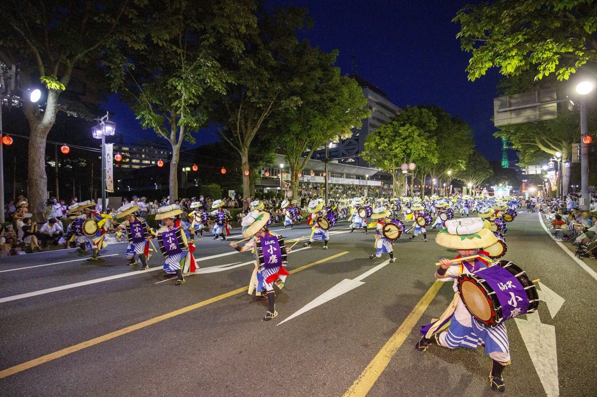
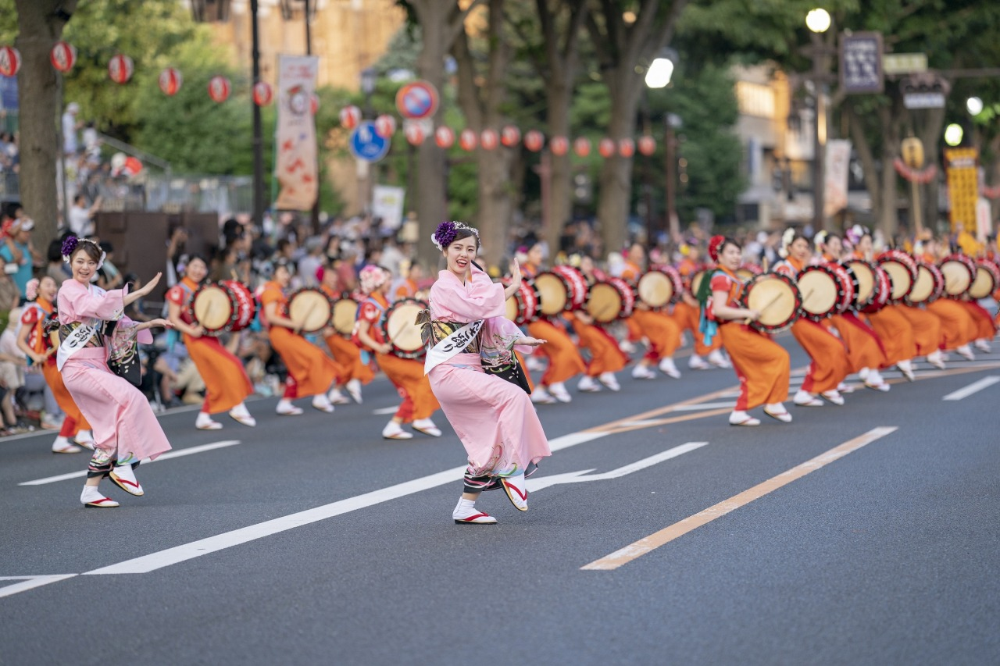
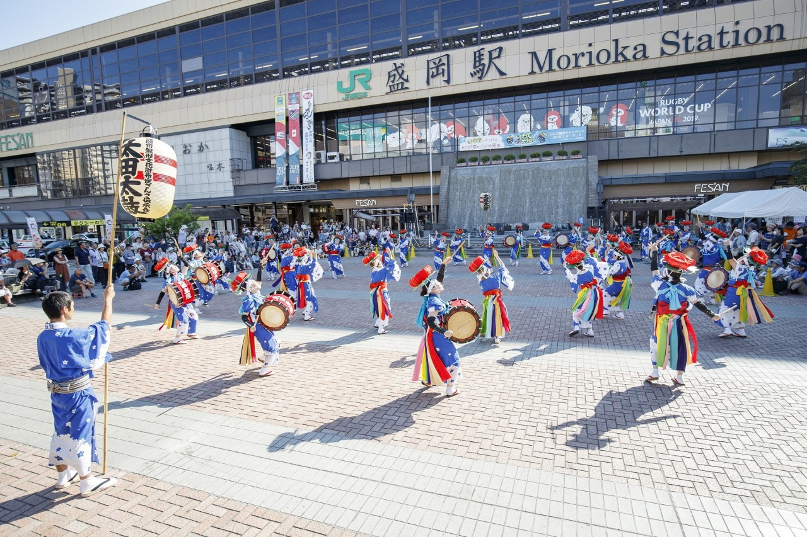

|
|
岩手県の祭りさんさ祭りとは「盛岡さんさ踊り」は毎年8月1日から4日、盛岡市内の路上や各所を会場に行われている夏まつりです。 一つの祭として太鼓が参加する数では日本一を誇り、「和太鼓演奏世界一」としてギネスブックにも認定されました。 昭和53年(1978)年にさんさ踊りパレードが始まった時、「誰にでも踊れるさんさを」と伝統的な振り付けをふまえながら創案されたのが、現在の「盛岡さんさ踊り」で踊られているもので、第一(統合さんさ)から第二(七夕くずし)、第三(栄夜差)、第四の踊り(福呼踊り)までがあります。 さんさの由来さんさの歴史は「岩の手」の三ツ石伝説から由来し、鬼退治がされたのを老若男女が踊りながら喜んでいる様からさんさ踊りが誕生したといわれています。祭りの道具である太鼓は退治した鬼が二度と来ないように太鼓の音を山に響かせたのが始まりとされています。その他にも衣装や道具の数々に鬼や悪魔を払うための意味が込められています。 さんさの魅力さんさの魅力は... |